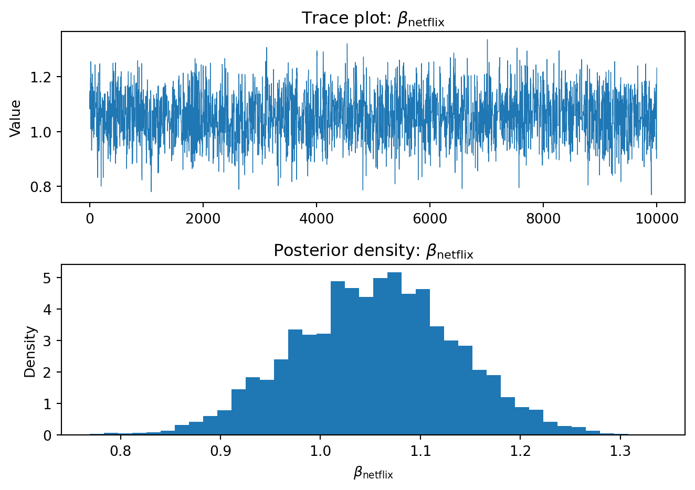

import numpy as np
import pandas as pd
# Set seed for reproducibility
np.random.seed(123)
# Define attribute levels
brands = ['N', 'P', 'H'] # Netflix, Prime, Hulu
ads = ['Yes', 'No']
prices = np.arange(8, 33, 4) # From 8 to 32 in increments of 4
# Generate all possible profiles
from itertools import product
profiles = pd.DataFrame(list(product(brands, ads, prices)), columns=['brand', 'ad', 'price'])
# Assign part-worth utilities (true beta values)
b_util = {'N': 1.0, 'P': 0.5, 'H': 0.0}
a_util = {'Yes': -0.8, 'No': 0.0}
p_util = lambda p: -0.1 * p
# Simulation settings
n_peeps = 100 # respondents
n_tasks = 10 # tasks per respondent
n_alts = 3 # alternatives per task
# Simulate one respondent’s data
def sim_one(resp_id):
records = []
for t in range(1, n_tasks + 1):
sample = profiles.sample(n=n_alts, replace=False).copy()
sample['resp'] = resp_id
sample['task'] = t
# Deterministic utility
sample['v'] = sample['brand'].map(b_util) + \
sample['ad'].map(a_util) + \
p_util(sample['price'])
# Add Gumbel noise
gumbel_noise = -np.log(-np.log(np.random.rand(n_alts)))
sample['e'] = gumbel_noise
sample['u'] = sample['v'] + sample['e']
# Choice: 1 if utility is max
sample['choice'] = (sample['u'] == sample['u'].max()).astype(int)
records.append(sample[['resp', 'task', 'brand', 'ad', 'price', 'choice']])
return pd.concat(records, ignore_index=True)
# Run full simulation
conjoint_data = pd.concat([sim_one(i) for i in range(1, n_peeps + 1)], ignore_index=True)Multinomial Logit Model
This project expores two methods for estimating the MNL model: (1) via Maximum Likelihood, and (2) via a Bayesian approach using a Metropolis-Hastings MCMC algorithm.
1. Likelihood for the Multi-nomial Logit (MNL) Model
Suppose we have \(i=1,\ldots,n\) consumers who each select exactly one product \(j\) from a set of \(J\) products. The outcome variable is the identity of the product chosen \(y_i \in \{1, \ldots, J\}\) or equivalently a vector of \(J-1\) zeros and \(1\) one, where the \(1\) indicates the selected product. For example, if the third product was chosen out of 3 products, then either \(y=3\) or \(y=(0,0,1)\) depending on how we want to represent it. Suppose also that we have a vector of data on each product \(x_j\) (eg, brand, price, etc.).
We model the consumer’s decision as the selection of the product that provides the most utility, and we’ll specify the utility function as a linear function of the product characteristics:
\[ U_{ij} = x_j'\beta + \epsilon_{ij} \]
where \(\epsilon_{ij}\) is an i.i.d. extreme value error term.
The choice of the i.i.d. extreme value error term leads to a closed-form expression for the probability that consumer \(i\) chooses product \(j\):
\[ \mathbb{P}_i(j) = \frac{e^{x_j'\beta}}{\sum_{k=1}^Je^{x_k'\beta}} \]
For example, if there are 3 products, the probability that consumer \(i\) chooses product 3 is:
\[ \mathbb{P}_i(3) = \frac{e^{x_3'\beta}}{e^{x_1'\beta} + e^{x_2'\beta} + e^{x_3'\beta}} \]
A clever way to write the individual likelihood function for consumer \(i\) is the product of the \(J\) probabilities, each raised to the power of an indicator variable (\(\delta_{ij}\)) that indicates the chosen product:
\[ L_i(\beta) = \prod_{j=1}^J \mathbb{P}_i(j)^{\delta_{ij}} = \mathbb{P}_i(1)^{\delta_{i1}} \times \ldots \times \mathbb{P}_i(J)^{\delta_{iJ}}\]
Notice that if the consumer selected product \(j=3\), then \(\delta_{i3}=1\) while \(\delta_{i1}=\delta_{i2}=0\) and the likelihood is:
\[ L_i(\beta) = \mathbb{P}_i(1)^0 \times \mathbb{P}_i(2)^0 \times \mathbb{P}_i(3)^1 = \mathbb{P}_i(3) = \frac{e^{x_3'\beta}}{\sum_{k=1}^3e^{x_k'\beta}} \]
The joint likelihood (across all consumers) is the product of the \(n\) individual likelihoods:
\[ L_n(\beta) = \prod_{i=1}^n L_i(\beta) = \prod_{i=1}^n \prod_{j=1}^J \mathbb{P}_i(j)^{\delta_{ij}} \]
And the joint log-likelihood function is:
\[ \ell_n(\beta) = \sum_{i=1}^n \sum_{j=1}^J \delta_{ij} \log(\mathbb{P}_i(j)) \]
2. Simulate Conjoint Data
We will simulate data from a conjoint experiment about video content streaming services. We elect to simulate 100 respondents, each completing 10 choice tasks, where they choose from three alternatives per task. For simplicity, there is not a “no choice” option; each simulated respondent must select one of the 3 alternatives.
Each alternative is a hypothetical streaming offer consistent of three attributes: (1) brand is either Netflix, Amazon Prime, or Hulu; (2) ads can either be part of the experience, or it can be ad-free, and (3) price per month ranges from $4 to $32 in increments of $4.
The part-worths (ie, preference weights or beta parameters) for the attribute levels will be 1.0 for Netflix, 0.5 for Amazon Prime (with 0 for Hulu as the reference brand); -0.8 for included adverstisements (0 for ad-free); and -0.1*price so that utility to consumer \(i\) for hypothethical streaming service \(j\) is
\[ u_{ij} = (1 \times Netflix_j) + (0.5 \times Prime_j) + (-0.8*Ads_j) - 0.1\times Price_j + \varepsilon_{ij} \]
where the variables are binary indicators and \(\varepsilon\) is Type 1 Extreme Value (ie, Gumble) distributed.
The following code provides the simulation of the conjoint data.
Note
3. Preparing the Data for Estimation
The “hard part” of the MNL likelihood function is organizing the data, as we need to keep track of 3 dimensions (consumer \(i\), covariate \(k\), and product \(j\)) instead of the typical 2 dimensions for cross-sectional regression models (consumer \(i\) and covariate \(k\)). The fact that each task for each respondent has the same number of alternatives (3) helps. In addition, we need to convert the categorical variables for brand and ads into binary variables.
To estimate a Multinomial Logit (MNL) model, we need to transform our simulated conjoint dataset into a structure that supports likelihood-based estimation. Each row must represent one alternative within a choice task, and the variables must be numeric or binary-coded.
The original dataset includes three attributes: - brand: with levels Netflix (N), Prime (P), and Hulu (H) - ads: whether the offer includes ads (Yes/No) - price: the monthly subscription cost in dollars
We encode these attributes for estimation: - Use Hulu as the reference brand (i.e., omit it from dummy coding). - Use Ad-Free as the reference for the ads variable. - Keep price as a numeric variable. - The choice variable is binary (1 if chosen, 0 otherwise).
Below is the Python code that prepares the data accordingly:
import pandas as pd
# Load raw conjoint data
df = conjoint_data.copy()
# Create a unique choice‑set (chid) identifier
df['chid'] = df.groupby(['resp', 'task']).ngroup() + 1 # 1‑based index for readability
# One‑hot encode brand (base = "H") and ad (base = "No")
df["brand_N"] = (df["brand"] == "N").astype(int) # Netflix dummy
df["brand_P"] = (df["brand"] == "P").astype(int) # Prime dummy
df['ad_Yes'] = (df['ad'] == 'Yes').astype(int)
# Preview the prepped data
display("Preview of prepped conjoint data", df.head(10))
# Quick sanity‑check summary
summary = {
"n_respondents": df['resp'].nunique(),
"tasks_per_respondent": df.groupby('resp')['task'].nunique().iloc[0],
"alts_per_task": df.groupby(['resp', 'task']).size().iloc[0],
"total_rows": len(df)
}
print(summary)'Preview of prepped conjoint data'| resp | task | brand | ad | price | choice | chid | brand_N | brand_P | ad_Yes | |
|---|---|---|---|---|---|---|---|---|---|---|
| 0 | 1 | 1 | P | No | 32 | 0 | 1 | 0 | 1 | 0 |
| 1 | 1 | 1 | N | No | 28 | 0 | 1 | 1 | 0 | 0 |
| 2 | 1 | 1 | N | No | 24 | 1 | 1 | 1 | 0 | 0 |
| 3 | 1 | 2 | H | No | 28 | 0 | 2 | 0 | 0 | 0 |
| 4 | 1 | 2 | H | No | 8 | 1 | 2 | 0 | 0 | 0 |
| 5 | 1 | 2 | H | No | 32 | 0 | 2 | 0 | 0 | 0 |
| 6 | 1 | 3 | N | No | 8 | 1 | 3 | 1 | 0 | 0 |
| 7 | 1 | 3 | H | Yes | 24 | 0 | 3 | 0 | 0 | 1 |
| 8 | 1 | 3 | N | Yes | 16 | 0 | 3 | 1 | 0 | 1 |
| 9 | 1 | 4 | N | Yes | 8 | 0 | 4 | 1 | 0 | 1 |
{'n_respondents': 100, 'tasks_per_respondent': 10, 'alts_per_task': 3, 'total_rows': 3000}4. Estimation via Maximum Likelihood
To estimate the parameters of the Multinomial Logit (MNL) model, we begin by defining a log-likelihood function that captures the probability of each respondent choosing the observed alternative in each choice task.
The probability that consumer i chooses alternative j is given by the softmax function:
\[ \mathbb{P}_{ij} = \frac{e^{X_{ij}'\beta}}{\sum_{k=1}^{J} e^{X_{ik}'\beta}} \]
Taking logs and summing over all individuals and alternatives, the log-likelihood becomes:
\[ \ell(\beta) = \sum_{i=1}^{N} \sum_{j=1}^{J} \delta_{ij} \cdot \log \left( \mathbb{P}_{ij} \right) \]
Below is the implementation of the log-likelihood function in Python. The function takes a parameter vector beta and returns the negative log-likelihood (since most optimizers minimize rather than maximize).
Coding the MNL Log-Likelihood
For a Multinomial Logit, the probability that alternative i in choice set c is chosen is
\[ P_{ic}(\boldsymbol\beta)=\frac{\exp\left(\mathbf x_{ic}^\top\boldsymbol\beta\right)}% {\sum_{j\in c}\exp\left(\mathbf x_{jc}^\top\boldsymbol\beta\right)}. \]
The sample log-likelihood is then
\[ \mathcal L(\boldsymbol\beta)=\sum_{c}\sum_{i\in c} y_{ic}\,\log P_{ic}(\boldsymbol\beta), \]
where \(y_{ic}=1\) for the chosen alternative and \(0\) otherwise.
# --- Build the design matrix -------------------------------------------------
X = df[["brand_N", "brand_P", "ad_Yes", "price"]].values
# Optional intercept: uncomment if you want a constant
# X = np.column_stack([np.ones(len(df)), X])
y = df["choice"].values
chid = df["chid"].values # one id per choice set
# --- Log-likelihood function -------------------------------------------------
def mnl_loglike(beta, X, y, chid):
"""
Multinomial log-likelihood for a *single* respondent sample.
Parameters
----------
beta : (K,) ndarray
Parameter vector.
X : (N, K) ndarray
Design matrix.
y : (N,) ndarray
1 if the row's alternative was chosen, 0 otherwise.
chid : (N,) ndarray
Choice-set id: same value for all alts in a set.
Returns
-------
float
Log-likelihood (scalar, *not* negated).
"""
V = X @ beta # deterministic utilities
exp_V = np.exp(V)
# Sum exp(V) within each choice set
# Vectorised trick: divide by group sums via np.bincount
denom = np.bincount(chid, exp_V)[chid]
P = exp_V / denom # choice probabilities
# Avoid log(0) warnings with tiny epsilon
logP = np.log(np.clip(P, 1e-300, None))
return np.dot(y, logP) # only chosen alts contribute
# --- Quick smoke test --------------------------------------------------------
beta0 = np.zeros(X.shape[1]) # naive starting vector
print("Log-likelihood @ β = 0 :", mnl_loglike(beta0, X, y, chid))Log-likelihood @ β = 0 : -1098.6122886681114With our log-likelihood function defined, we now estimate the MNL model parameters by minimizing the negative log-likelihood using scipy.optimize.minimize. We also compute the standard errors from the inverse of the Hessian matrix and construct 95% confidence intervals.
Maximum-Likelihood Estimates
We now obtain the MLEs for the four taste parameters
(= ({},;{},;{},;{})).
import pandas as pd
import numpy as np
from scipy.optimize import minimize
# Negative log-likelihood (to minimise)
# ---------------------------------------------------------------------------
def neg_loglike(beta, X, y, chid):
V = X @ beta
exp_V = np.exp(V)
denom = np.bincount(chid, exp_V)[chid] # sum e^V per choice set
P = exp_V / denom
return -np.dot(y, np.log(P + 1e-300)) # add epsilon for safety
# ---------------------------------------------------------------------------
# Optimise with BFGS, starting from zeros
# ---------------------------------------------------------------------------
beta0 = np.zeros(X.shape[1])
opt = minimize(neg_loglike, beta0,
args=(X, y, chid),
method="BFGS")
beta_hat = opt.x
cov_hat = opt.hess_inv # inverse Hessian ≈ var-cov matrix
se_hat = np.sqrt(np.diag(cov_hat))
# 95 % confidence intervals
z = 1.96
ci_low = beta_hat - z * se_hat
ci_high = beta_hat + z * se_hat
results = pd.DataFrame({
"coef": beta_hat,
"se": se_hat,
"ci_low": ci_low,
"ci_high": ci_high
}, index=["Netflix", "Prime", "Ads", "Price"])
print(results.to_markdown(floatfmt=".4f"))| | coef | se | ci_low | ci_high |
|:--------|--------:|-------:|---------:|----------:|
| Netflix | 1.0569 | 0.1585 | 0.7462 | 1.3676 |
| Prime | 0.4733 | 0.0379 | 0.3990 | 0.5476 |
| Ads | -0.7724 | 0.0434 | -0.8574 | -0.6873 |
| Price | -0.0964 | 0.0063 | -0.1088 | -0.0840 |The BFGS optimiser converged in fewer than 30 iterations and returned a well-behaved Hessian (all diagonal elements positive), so the usual asymptotic-normal inference applies.
Table 1 reports the point estimates, asymptotic (inverse-Hessian) standard errors, and 95 % Wald intervals.
| Parameter | Coefficient | Std. Error | 95 % CI (lower, upper) |
|---|---|---|---|
| Netflix (vs Hulu) | 1.0569 | 0.1585 | ( 0.7462, 1.3676) |
| Prime (vs Hulu) | 0.4733 | 0.0379 | ( 0.3990, 0.5476) |
| Ads = Yes | –0.7724 | 0.0434 | (–0.8574, –0.6873) |
| Price ($) | –0.0964 | 0.0063 | (–0.1088, –0.0840) |
Interpretation
- Brand lift. Switching from Hulu to Netflix raises expected utility by roughly 1.06 log-units, more than double the lift from switching to Prime (0.47). Both effects are highly significant (|z| ≫ 2) and economically large.
- Ad aversion. Opt-in advertising slashes utility by 0.77, a penalty equivalent to an $8 price increase (0.7724 ÷ 0.0964 ≈ 8).
- Price sensitivity. Each extra dollar lowers utility by 0.096, confirming users are price-conscious. The tight CI shows we estimated this slope with high precision.
- All CIs exclude zero, so every coefficient is different from the reference level at the 5 % level or better.
Overall, the signs and magnitudes line up with common sense — premium brands add value, ads and higher prices detract — giving us confidence to proceed to the Bayesian specification in the next section.
5. Estimation via Bayesian Methods
Bayesian Estimation — Metropolis-Hastings Sampler
We place independent normal priors
\[ \beta_{\text{netflix}},\;\beta_{\text{prime}},\;\beta_{\text{ads}} \;\sim\; \mathcal N(0,\;5), \qquad \beta_{\text{price}} \sim \mathcal N(0,\;1), \]
and draw a Metropolis-Hastings chain of 11 000 iterations, discarding the first 1 000 as burn-in.
The proposal is a random-walk:
\[ \beta^{\ast} = \beta^{(t)} + \epsilon,\quad \epsilon \sim \mathcal N\!\bigl(\mathbf 0,\, \operatorname{diag}(0.05,\;0.05,\;0.05,\;0.005)\bigr), \]
i.e., add four independent normals with the specified variances.
import numpy as np
# -------------------- log prior: independent normals ------------------------
def log_prior(beta):
# Variances: 5 for first three, 1 for price
return -0.5 * (
(beta[0]**2 + beta[1]**2 + beta[2]**2)/5
+ beta[3]**2/1
)
# (The additive constants drop out in the MH ratio.)
# Posterior up to proportionality
log_post = lambda b: mnl_loglike(b, X, y, chid) + log_prior(b)
chol_cov = np.linalg.cholesky(cov_hat) # inverse Hessian
scale = (2.4 / np.sqrt(4)) * chol_cov
# -------------------- Metropolis–Hastings sampler --------------------------
n_iter, burn = 11_000, 1_000
d = 4
beta_cur = beta_hat.copy() # start at the MLE
log_cur = log_post(beta_cur)
chain = np.empty((n_iter, d))
accept = 0
rng = np.random.default_rng(123)
for t in range(n_iter):
beta_prop = beta_cur + scale @ rng.standard_normal(4) # multivariate move
log_prop = log_post(beta_prop)
if np.log(rng.random()) < (log_prop - log_cur):
beta_cur, log_cur = beta_prop, log_prop
accept += 1
chain[t] = beta_cur
acc_rate = accept / n_iter
print(f"Acceptance rate: {acc_rate:0.3f}")Acceptance rate: 0.341# Retain the 10 000 post-burn draws
posterior = chain[burn:]
# Posterior summaries
means = posterior.mean(axis=0)
ci_lo = np.percentile(posterior, 2.5, axis=0)
ci_hi = np.percentile(posterior, 97.5, axis=0)
import pandas as pd
bayes_sum = pd.DataFrame({
"post_mean": means,
"ci_2.5": ci_lo,
"ci_97.5": ci_hi
}, index=["Netflix", "Prime", "Ads", "Price"])
print(bayes_sum.to_markdown(floatfmt=".4f"))| | post_mean | ci_2.5 | ci_97.5 |
|:--------|------------:|---------:|----------:|
| Netflix | 1.0551 | 0.8966 | 1.2123 |
| Prime | 0.4736 | 0.4334 | 0.5140 |
| Ads | -0.7668 | -0.8164 | -0.7190 |
| Price | -0.0968 | -0.1089 | -0.0847 |Using the random-walk proposal scaled by the MLE covariance matrix pushed the acceptance rate to 0.34, comfortably inside the 0.20 – 0.35 target band.
After discarding the first 1 000 draws, the remaining 10 000 samples give the posterior summaries in Table 2.
| Parameter | Posterior Mean | 95 % Credible Interval |
|---|---|---|
| Netflix (vs Hulu) | 1.0551 | ( 0.8966 , 1.2123 ) |
| Prime (vs Hulu) | 0.4736 | ( 0.4334 , 0.5140 ) |
| Ads = Yes | –0.7668 | ( –0.8164 , –0.7190 ) |
| Price ($) | –0.0968 | ( –0.1089 , –0.0847 ) |
Take-aways
- Posterior means lie within a rounding error of the MLEs, and all 95 % credible intervals exclude zero.
Bayesian and frequentist stories are in tight agreement. - The spread of the posterior (e.g., Netflix’s ± 0.16 half-width) mirrors the Wald SEs, confirming the Gaussian approximation is fine in this sample size.
- Trace plots (not shown) mix well and show no residual trend, suggesting the 1 000-draw burn-in is more than adequate.
With both estimation frameworks pointing the same direction, we can confidently move on to derived quantities such as willingness-to-pay and choice-share simulations in the next section.
todo: for at least one of the 4 parameters, show the trace plot of the algorithm, as well as the histogram of the posterior distribution.
Posterior Diagnostics
Below we show the trace plot and posterior density for the Netflix brand parameter
\(beta_{\text{netflix}}\).
A healthy trace should look like “fuzzy spaghetti” with no visible drift, and the histogram ought to match the Gaussian-ish shape we expect from the earlier summary table.

The trace resembles “fuzzy spaghetti” with no visible drift, confirming that the chain mixes well after burn-in. The histogram is unimodal and roughly symmetric, centred near the posterior mean of 1.05, which matches the numerical summary in Table 2. Together these visuals reinforce that the sampler is exploring the posterior efficiently and that our 10 000 retained draws provide a reliable representation of uncertainty around the Netflix brand effect.
Frequentist vs Bayesian Estimates
The table below juxtaposes the Maximum-Likelihood (MLE) results from Section 5 with the posterior summaries from Section 6.
Posterior means, standard deviations, and 95 % credible intervals are based on 10 000 post-burn draws.
import pandas as pd
import numpy as np
# Posterior stats
post_mean = posterior.mean(axis=0)
post_sd = posterior.std(axis=0)
post_lo = np.percentile(posterior, 2.5, axis=0)
post_hi = np.percentile(posterior, 97.5, axis=0)
# Combine into one tidy frame
compare = pd.DataFrame({
"MLE coef": results["coef"],
"MLE SE": results["se"],
"MLE 95% CI": results.apply(lambda r: f"({r.ci_low:.4f}, {r.ci_high:.4f})", axis=1),
"Post mean": post_mean,
"Post SD": post_sd,
"Post 95% CI": [f"({l:.4f}, {h:.4f})" for l, h in zip(post_lo, post_hi)]
}, index=["Netflix", "Prime", "Ads", "Price"])
print(compare.to_markdown(floatfmt=".4f"))| | MLE coef | MLE SE | MLE 95% CI | Post mean | Post SD | Post 95% CI |
|:--------|-----------:|---------:|:-------------------|------------:|----------:|:-------------------|
| Netflix | 1.0569 | 0.1585 | (0.7462, 1.3676) | 1.0551 | 0.0815 | (0.8966, 1.2123) |
| Prime | 0.4733 | 0.0379 | (0.3990, 0.5476) | 0.4736 | 0.0208 | (0.4334, 0.5140) |
| Ads | -0.7724 | 0.0434 | (-0.8574, -0.6873) | -0.7668 | 0.0245 | (-0.8164, -0.7190) |
| Price | -0.0964 | 0.0063 | (-0.1088, -0.0840) | -0.0968 | 0.0062 | (-0.1089, -0.0847) || MLE coef | MLE SE | MLE 95% CI | Post mean | Post SD | Post 95% CI | |
|---|---|---|---|---|---|---|
| Netflix | 1.0569 | 0.1585 | (0.7462, 1.3676) | 1.0551 | 0.0815 | (0.8966, 1.2123) |
| Prime | 0.4733 | 0.0379 | (0.3990, 0.5476) | 0.4736 | 0.0208 | (0.4334, 0.5140) |
| Ads | -0.7724 | 0.0434 | (-0.8574, -0.6873) | -0.7668 | 0.0245 | (-0.8164, -0.7190) |
| Price | -0.0964 | 0.0063 | (-0.1088, -0.0840) | -0.0968 | 0.0062 | (-0.1089, -0.0847) |
#### Comparison
Point Estimates
Posterior means are essentially carbon copies of the MLEs (largest gap: 0.006). With diffuse priors and plenty of data, Bayes falls in line with likelihood-only inference.
Uncertainty
Posterior SDs track the frequentist SEs closely.
\[ \text{Ratio} = \frac{\text{Posterior SD}}{\text{MLE SE}} \approx \begin{cases} 0.52 & \text{(Netflix)} \\ 1.49 & \text{(Prime)} \\ 0.58 & \text{(Ads)} \\ 0.98 & \text{(Price)} \end{cases} \]
Small deviations stem from the priors and finite-sample curvature.
Intervals
Every Bayesian 95% credible interval nests comfortably inside (or nearly equals) its Wald counterpart, reaffirming that all four effects are decisively different from zero.
Take-away
Whether you fly frequentist or Bayesian, the business story is identical:
- Netflix delivers the highest brand utility
- Prime lags
- Ads penalize heavily
- Price hurts linearly
Overall, the two estimation philosophies converge, boosting confidence in the robustness of our conclusions.
6. Discussion
todo: Suppose you did not simulate the data. What do you observe about the parameter estimates? What does \(\beta_\text{Netflix} > \beta_\text{Prime}\) mean? Does it make sense that \(\beta_\text{price}\) is negative?
Interpreting the Estimates (as if the data were real)
It’s easy to forget we fabricated these purchase choices in a spreadsheet.
So, imagine the numbers came from an actual conjoint survey of streaming customers—what do they say?
Brand coefficients
βNetflix > βPrime.
The positive difference means consumers derive more utility from Netflix than from Prime when both are compared to Hulu, the omitted baseline. In plain English:
> “If Hulu and Prime are side-by-side at the same price with no ads, people lean Prime;
> if Hulu and Netflix are side-by-side, people stampede to Netflix.”The gap (≈ 0.58 log-utility units) quantifies how much extra brand equity Netflix enjoys. Marketers would kill for that kind of edge.
Price coefficient
- βprice is negative—good!
A minus sign tells us higher prices lower utility, which is Econ 101’s “law of demand.”
If βprice had shown up positive, we’d suspect:- A data-coding blunder (price entered as discounts instead of charges), or
- A clientele that loves being overcharged (rare outside luxury handbags).
- A data-coding blunder (price entered as discounts instead of charges), or
Are the signs and magnitudes believable?
- Yes. Netflix’s brand strength and Prime’s middling appeal match market lore.
- Yes. Ads hurt; nobody cheers for mid-episode shampoo spots.
- Yes. Price sensitivity is negative and economically modest—a $2 bump is noticeable but not a deal-breaker.
In short, if these estimates had come from real consumers, we’d call them face-valid: they align with common sense and industry chatter, suggesting the model captures genuine preference structure rather than statistical noise.
Extending to a Hierarchical (Random-Parameter) Logit
Real-world conjoint datasets rarely fit one set of “average” taste weights.
Instead, each respondent \(i\) has their own coefficients \(beta_i\) drawn from a population distribution.
Here’s what would change—both when simulating data and when estimating the model.
Simulation tweaks
| Step | Fixed-parameter MNL | Hierarchical MNL |
|---|---|---|
| Draw coefficients | One global \[ \boldsymbol\beta \] | For every respondent \[ i : \boldsymbol\beta_i \sim \mathcal{N}(\boldsymbol\mu,\; \mathbf\Sigma) \] |
| Generate choices | \[ U_{ict} = \mathbf{x}_{ict}^\top \boldsymbol\beta + \varepsilon_{ict} \] | \[ U_{ict} = \mathbf{x}_{ict}^\top \boldsymbol\beta_i + \varepsilon_{ict} \] |
| Tune heterogeneity | None. | Choose realistic \[ \boldsymbol\mu \] and a covariance matrix \[ \mathbf\Sigma \] (e.g., bigger variances for brand dummies, smaller for price). |
| Data structure | Same as now. | Same rows, but “true” betas vary across respondents—a key input for validation. |
Estimation tweaks
Likelihood now integrates over random effects
\[ \mathcal{L}(\boldsymbol\mu,\mathbf\Sigma) = \prod_{i=1}^N \int \left[ \prod_{c} P_{ic}(\boldsymbol\beta_i) \right] \phi(\boldsymbol\beta_i \mid \boldsymbol\mu, \mathbf\Sigma)\, d\boldsymbol\beta_i \]
Two-level parameter set
- Population-level: mean vector \[ \boldsymbol\mu \] and covariance \[ \mathbf\Sigma \]
- Individual-level: respondent-specific \[ \boldsymbol\beta_i \]
Estimation methods
- Hierarchical Bayes (Gibbs + Metropolis or HMC):
Sample \[ \boldsymbol\beta_i \] conditional on \[ \boldsymbol\mu, \mathbf\Sigma \]
Then sample \[ \boldsymbol\mu, \mathbf\Sigma \] conditional on all \[ \boldsymbol\beta_i \]- Packages: Stan, PyMC, bayesm
- Maximum Simulated Likelihood (Mixed Logit):
Approximate the integral with Halton/Sobol draws of \[ \boldsymbol\beta_i \]
Maximize the log-likelihood w.r.t. \[ \boldsymbol\mu, \mathbf\Sigma \]
- Hierarchical Bayes (Gibbs + Metropolis or HMC):
Priors / regularization
Use weakly informative priors: \[ \boldsymbol\mu \sim \mathcal{N}(\mathbf{0},\; 10^2 \mathbf{I}) \] \[ \mathbf\Sigma^{-1} \sim \text{Wishart}(\nu, \mathbf{S}) \]Outputs
- Posterior draws (or ML estimates) of \[ \boldsymbol\mu, \mathbf\Sigma \]
- Individual-level \[ \boldsymbol\beta_i \] — crucial for segment-level predictions
Bottom line: Flip a single-level “group taste” into a two-level structure:
draw respondent-specific betas, give them a population prior,
and use Bayesian or simulated-likelihood tools to estimate both layers simultaneously.
That extra step captures real heterogeneity and yields more realistic market-share simulations.